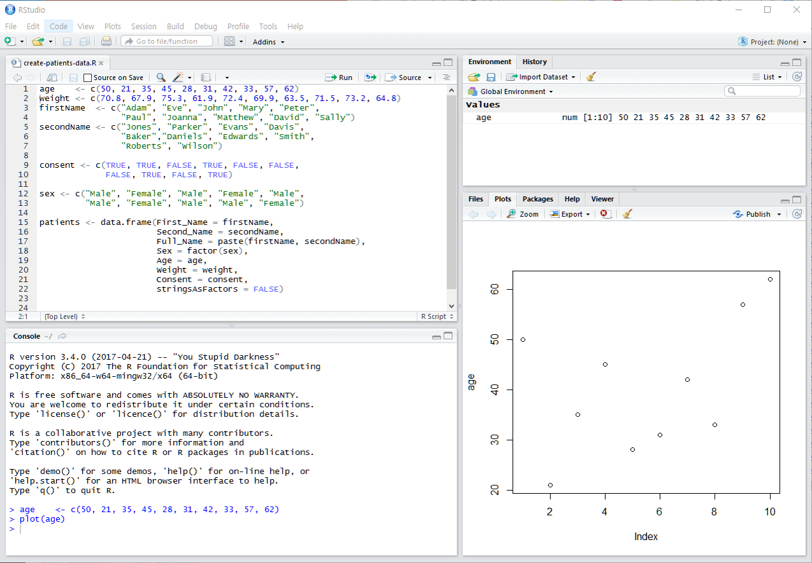
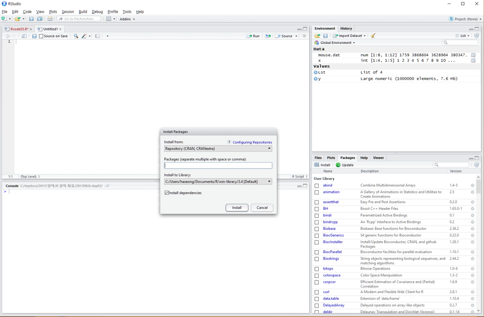
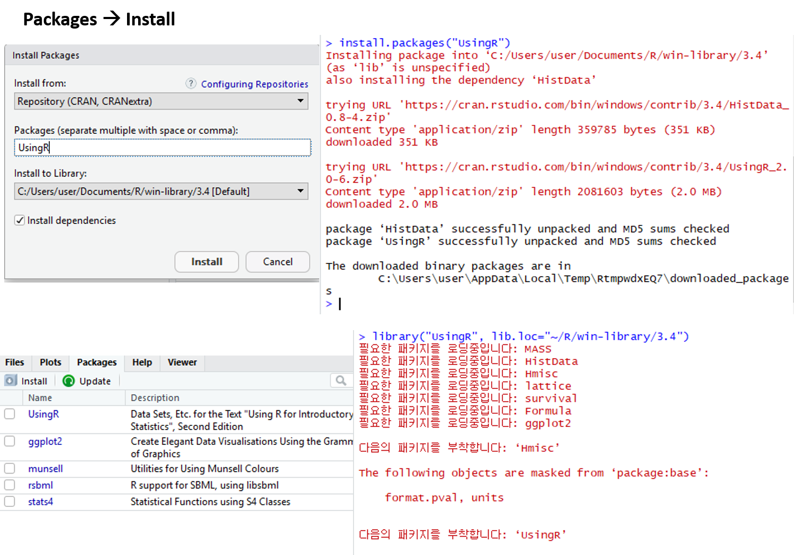

Chapter 2 R/Rstudio basics
2.1 What is R / Rstudio

R은 통계나 생물통계, 유전학을 연구하는 사람들 사이에서 널리 사용되는 오픈소스 프로그래밍 언어 입니다. Bell Lab에서 개발한 S 언어에서 유래했으며 많은 패키지가 (다른 사람들이 만들어 놓은 코드) 있어서 쉽게 가져다 사용할 수 있습니다. R은 복잡한 수식이나 통계 알고리즘을 간단히 구현하고 사용할 수 있으며 C, C++, Python 등 다른 언어들과의 병행 사용도 가능합니다.
R은 통계분석에 널리 사용되는데 이는 데이터 가시화를 위한 그래픽 기능이나 벡터 연산 등의 편리함 때문에 점점 더 많은 사람들이 사용하고 있습니다. 기존에는 느린 속도나 부족한 확장성이 다른 언어들에 비해 단점으로 지적되었으나 R 언어의 계속적인 개발과 업데이트로 이러한 단점들이 빠르게 극복되고 있습니다. R 사용을 위해서는 R 언어의 코어 프로그램을 먼저 설치하고 그 다음 R 언어용 IDE인 RStudio 설치가 필요합니다.


2.2 R / Rstudio Installation
2.2.1 R 설치
- R 사이트에 접속 후 (https://www.r-project.org/) 좌측 메뉴 상단에 위치한 CRAN 클릭.
- 미러 사이트 목록에서 Korea의 아무 사이트나 들어감
- Download R for Windows를 클릭 후 base 링크 들어가서
- Download R x.x.x for Windows 링크 클릭으로 실행 프로그램 다운로드 - 로컬 컴퓨터에 Download 된 R-x.x.x-win.exe 를 실행
- 설치 가이드에 따라 R 언어 소프트웨어 설치 완료
2.2.2 Rstudio 설치
Rstudio는 R 언어를 위한 오픈소스 기반 통합개발환경(IDE)으로 R 프로그래밍을 위한 편리한 기능들을 제공해 줍니다.
- 사이트에 접속 (https://www.rstudio.com/), 상단의 Products > RStudio 클릭
- RStudio Desktop 선택
- Download RStudio Desktop 클릭
- RStudio Desktop Free 버전의 Download를 선택하고
- Download RStudio for Windows 클릭, 다운로드
- 로컬 컴퓨터에 다운로드된 RStudio-x.x.x.exe 실행
- 설치 가이드에 따라 설치 완료
2.3 Rstudio interface
- 좌측 상단의 공간은 코드편집창, 좌측 하단은 콘솔창 이며 각 위치를 기호에 따라서 바꿀 수 있습니다.

2.3.1 Keyboard shortcuts
- 참고사이트
- https://support.rstudio.com/hc/en-us/articles/200711853-Keyboard-Shortcuts
- Tools –> Keyboard shortcut Quick Reference (
Alt + Shift + K)
- 코드편집창 이동 (
Ctrl+1) 콘솔창 이동(Ctrl+2) - 한 줄 실행 (
Ctrl+Enter) - 주석처리 (
Ctrl + Shift + C)- 또는
#으로 시작하는 라인
- 또는
2.3.2 Exercise
- 코드편집창에서 다음 입력하시오

- 단축키
Ctrl + enter로 코드 실행 - 단축키
Ctrl + 2로 커서 콘솔창으로 이동 x값x+y값 확인- 단축키
Ctrl + 1로 코드편집창 이동 - 단축키
Ctrl + Shift + C사용
# x <- 10
# y <- 202.3.3 Set a project
프로젝트를 만들어서 사용할 경우 파일이나 디렉토리, 내용 등을 쉽게 구분하여 사용 가능합니다. 아래와 같이 원하는 위치에 원하는 이름의 프로젝트를 생성하고 프로젝트를 시작할 때는 해당 디렉토리의
xxx.Rproj파일을 클릭합니다.File > New Project > New Directory > New Project > “kribb-R” > Create Project
File > New File > R Script > “day1.R”
2.4 R programming
2.4.1 Console calculator
2 + 2
((2 – 1)^2 + (1 – 3)^2 )^(1/2)
2 + 2; 2 - 22.4.2 Exercise
다음 공식들을 계산하는 R 코드를 작성하시오
\[ \sqrt{(4+3)(2+1)} \]
\[ 2^3 + 3^2 \]
\[ \frac{0.25 - 0.2}{\sqrt{0.2 (1-0.2)/100}}\]
2.4.3 Variables and values
- 프로그래밍 언어의 공통적 개념
변수,함수,자료형,조건문,반복문
- Assignment operator (
<-OR=)- Valid object name
<-value - 단축키:
Alt + -(the minus sign)
- Valid object name
x <- 2
y <- x^2 – 2*x + 1
y
x <- "two"
some_data <- 9.8- 내장 변수 Built-in variables
pi- 변수이름 작명법
- 문자, 숫자, “_”, “.” 등으로 구성
- 대소문자 구분
- 가독성, 의미있는 변수 이름
- 길이 제한 없음
i_use_snake_case <- 1
otherPeopleUseCamelCase <- 2
some.people.use.periods <- 3
And_aFew.People_RENOUNCEconvention <- 4- 자동 완성 기능 (Tab completion) in RStudio
- 이전 명령은 콘솔에서 위 아래 화살표
2.4.4 Exercise
변수
x에 1, 3, 5, 7, 9를, 변수y에 2, 4, 6, 8, 10을 저장하는 코드를 작성하시오앞서 변수
x와y를 더한 값을z에 저장하는 코드를 작성하시오변수 x에 “hello world!” 를 저장하고 x의 값을 출력하는 코드를 작성하시오
2.4.5 Functions
함수(Function)란 사용자가 원하는 기능을 수행하는 코드의 모음으로서 반복적으로 쉽게 사용할 수 있도록 만들어 놓은 코드 입니다. 특정 데이터를 입력으로 받아 원하는 기능을 수행한 후 결과 데이터를 반환하는 구조를 가집니다. 함수는 일반적으로 다음과 같은 포멧으로 구현할 수 있습니다.
my_function_name <- function(parameter1, parameter2, ... ){
##any statements
return(object)
}예를 들어 다음과 같은 my_sine 함수를 만들 수 있으며 parameter (매개변수)는 x이고 y는 반환값을 저장하는 지역변수 입니다.
my_sine <- function(x){
y <- sin(x)
return(y)
}- 내장 함수 (Built-in functions)
x <- pi
sin(x)
sqrt(x)
log(x)
log(x, 10)
x <- c(10, 20, 30)
x + x
mean(x)
sum(x)/length(x)2.4.6 Exercise
변수
x에 1, 3, 5, 7, 9를, 변수y에 2, 4, 6, 8, 10을 저장하는 코드를 작성하시오x와y를 더한 값을z에 저장하는 코드를 작성하시오mysum이라는 이름의 함수를 작성하되 두 변수를 입력으로 받아 더한 후 결과를 반환하는 코드를 작성하시오mymean이라는 이름의 함수를 작성하되 두 변수를 입력으로 받아 평균을 구한 후 결과를 반환하는 코드를 작성하시오
2.5 Terminology
- Session: R 언어 실행 환경
- Console: 명령어 입력하는 창
- Code: R 프로그래밍 변수/제어문 모음
- Object types:
- vector: 값들의 모임 combine function
c()EX: c(6, 11, 13, 31, 90, 92) - matrix: 2D 형태 값들의 모임
- array: 1D, 2D, 3D, … 형태 값들의 모임
- factor: 범주형 데이터
- data frame: 2D 형태 값들의 모임 (다른 타입 값 가능)
- list:
- function: 특정 기능 수행, [함수이름, 입력값 (arguments), 출력값 (return)] 으로 구성
- vector: 값들의 모임 combine function
- Data (value) types:
- Integers
- doubles/numerics
- logicals
- characters.
- Conditionals (조건, 제어):
if,==,&(AND),|(OR) Ex:(2 + 1 == 3) & (2 + 1 == 4)for,while: 반복 수
2.6 Supports
2.6.1 Help
R은 방대한 양의 도움말 데이터를 제공하며 다음과 같은 명령어로 찾아볼 수 있습니다.
help("mean")
?mean
example("mean")
help.search("mean")
??mean
help(package="MASS")

2.7 R packages and Dataset
2.7.1 R packages
- R 패키지는 함수들의 모음으로 다른 사람들이 만들어 놓은 함수를 가져와서 사용할 수 있음
- 예)
sum()은basepackage에 있고sd()함수는statspackage에서 제공 - 패키지를 구할 수 있는 가장 대표적인 사이트
- The Comprehensive R Archive Network (CRAN) - http://cran.r-project.org/web/views/
- Bioconductor - http://www.bioconductor.org/packages/release/bioc/

- UsingR package installation

install.packages("UsingR")- UsingR package loading
library(UsingR)
help(package="UsingR")2.7.2 Data sets
- 일반적으로 패키지 안에 관련된 데이터도 같이 저장
- data() function를 이용해서 패키지 데이터를 사용자 작업공간에 복사해서 사용 가능
head(rivers)
length(rivers)
class(rivers)
data(rivers)
data(package="UsingR")
library(HistData)
head(Cavendish)
str(Cavendish)
head(Cavendish$density2)
이 저작물은 크리에이티브 커먼즈 저작자표시-비영리-변경금지 4.0 국제 라이선스에 따라 이용할 수 있습니다.